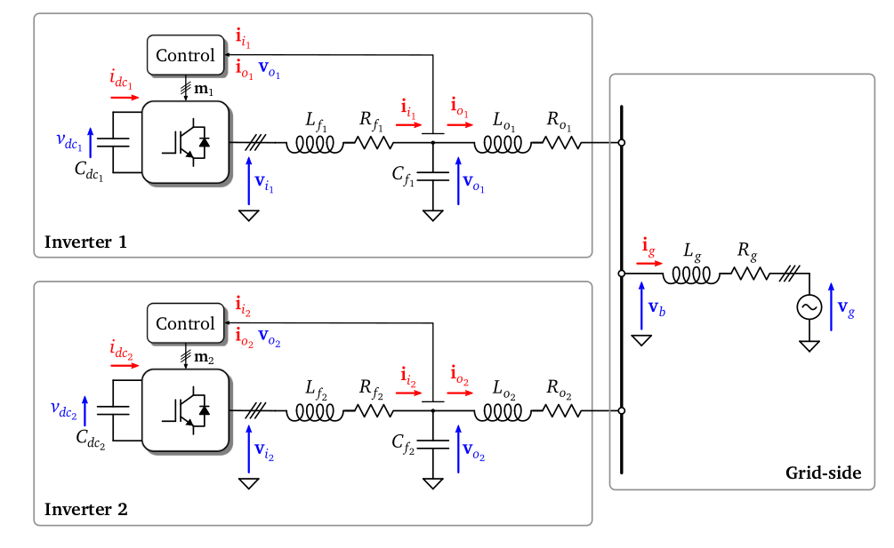
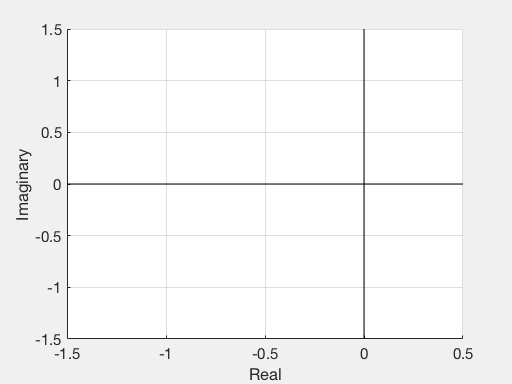

We analyze the stability of a simplified system modeling two converters in parallel connected to an ideal grid (modelled by a voltage source) via line impedances.
Each of the converters is fed by a DC source and includes an $LC$ circuit at its output to filter the ripple introduced by the converter switching. Similarly, an $LR$ impedance is included after the $LC$ filter to model the characteristics of the line until the point of common connection (PCC). The grid in this case is modelled with an ideal voltage source $v_g$ with a series $LR$ impedance. In this context, $f$ subscript denotes filter and $o$ subscript denotes output of the inverter. The subscript $g$ denotes that this variable is from the side of the grid.

The dynamics inside the system (e.g. how does the current in an inductor or the voltage in a capacitor evolve over time) is described by several differential equations describing the evolution of the state input vector. The model is then completed with the introduction of algebraic relations which link the previous equations by applying classical laws such as Kirchoff.
All these equations depend on some parameters characteristic of the physical model:
- $Rf_{1}$ and $Rf_{2}$ : the filter resistors;
- $Lf_{1}$ and $Lf_{2}$: the inductances of the filter;
- $Cf_{1}$ and $Cf_{2}$: the capacitances;
- $Ro_{1}$ and $Ro_{2}$: the output resistors;
- $Lo_{1}$ and $Lo_{2}$: the output inductances;
- $Rg$: the grid resistor;
- $Lg$: the grid inductance.
The model is then written in the form $\dot{x} = Ax + Bu$, with
and $u = [Vdc_{1} Vdc_{2} V_{g}]$. here we defined $L=Lo_{1}^{-1}+Lo_{2}^{-1}+Lg^{-1}$.
The stability of the system is discussed by studying the evolution of the eigenvalues of $A$ in dependence of the aforementioned parameters. Due to the size of the system and to the large number of parameters involved, this stability analysis needs to be addressed by means of fine computational tools.
clear
Variables composing the state vector
syms Ii1 Vo1 Io1 Ii2 Vo2 Io2 Ig
Parameters entering in the model
syms Ro1 Rf1 Lf1 Cf1 Lo1
syms Ro2 Rf2 Lf2 Cf2 Lo2
syms Rg Lg L
% sustituimos numericamente excepto nRo1 syms m1 m2
Out of these parameters, we build the matrices $A$ and $B$ in symbolic form.
A = Amatrix();
B = Bmatrix();
We now want to study the evolution of the eigenvalues with respect to $Ro_{1}$. Thus, we assign some fix value to all the others parameters
nRf1 = 1; nLf1 = 1; nCf1 = 1; nLo1 = 1;
nRo2 = 1; nRf2 = 1; nLf2 = 1; nCf2 = 1;
nLo2 = 1; nRg = 1; nLg = 1; nL = 1/nLo1 + 1/nLo2;
and we build the corresponding matrix $A$, which will depend only on $Ro_{1}$.
symbolic = [Rf1, Lf1, Cf1, Lo1, ...
Ro2, Rf2, Lf2, Cf2, Lo2, ...
Rg, Lg, L];
numerical = [nRf1, nLf1, nCf1, nLo1, ...
nRo2, nRf2, nLf2, nCf2, nLo2, ...
nRg, nLg, nL];
nA = subs(A,symbolic,numerical)
nA =
[ -1, -1, 0, 0, 0, 0, 0]
[ 1, 0, -1, 0, 0, 0, 0]
[ 0, 1/2, -Ro1/2, 0, -1/2, 1/2, 1/2]
[ 0, 0, 0, -1, -1, 0, 0]
[ 0, 0, 0, 1, 0, -1, 0]
[ 0, -1/2, Ro1/2, 0, 1/2, -1/2, -1/2]
[ 0, 1/2, -Ro1/2, 0, Ro1/2, -1/2, -1/2]
Then, we convert it from symbolic to function_handle
funRo1 = matlabFunction(eig(nA));
Finally, we compute and plot the eigenvalues of this matrix $ A $ and we analyze their evolution while varying $\mathrm{Ro}_{1}$ in a given range.
nRo1 = -3:0.05:5;
eigenvalues = cell(1,length(nRo1));
index = 0;
for inRo1 = nRo1
index = index + 1;
% in each iteration we replace in funRo1 a different value of the parameter
eigenvalues{index} = funRo1(inRo1);
end
For each value of $Ro_1$ , the eigenvalues are stored in a cell. For instance, these are the eigenvalues corresponding to $Ro_1=-3 $
eigenvalues{1}
ans =
-1.0000 + 0.0000i
0.0000 + 0.0000i
-0.5000 - 0.8660i
-0.5000 + 0.8660i
0.0000 + 0.0000i
0.2500 - 0.6614i
0.2500 + 0.6614i
We then use use the Matlab program “EingEvolution” that we specifically degsigned, in order to see the evolution of these eigenvalues. This is done through the command EingEvolution(autovalues,nRo1,'R_{o1}','Gif_evo_eig.gif').
Finally, we can plot the evolution of the eigenvalues as a function of $R_{o_1}$.

This procedure may be repeated for all the others parameters, thus obtaining a complete stability analysis of our model.